经典旁轴相机顶部轮廓 → 提炼横向曲线与取景结构 → 转译为 CAMON 30 背部影像曲线
经典相机符号 / 旁轴相机设计
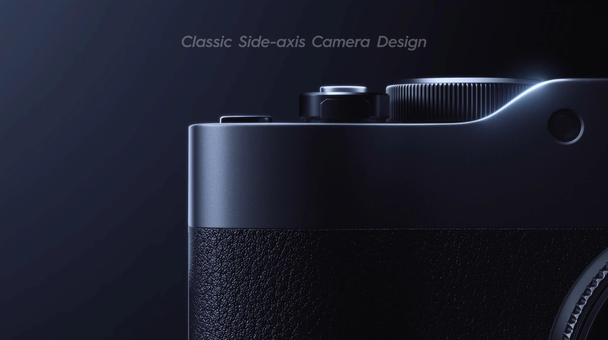
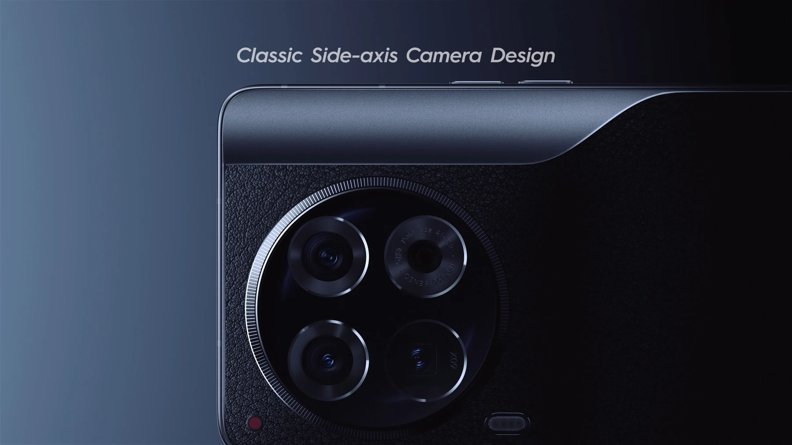
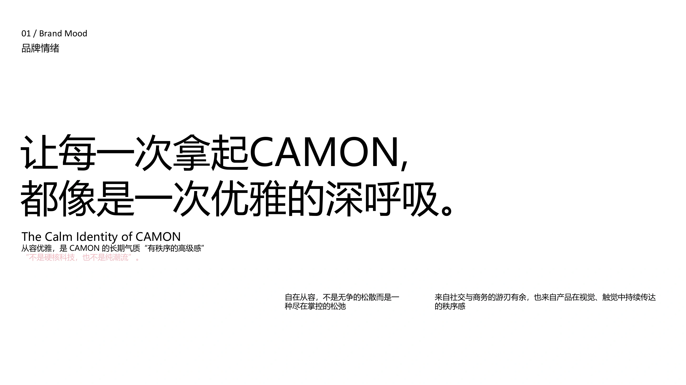
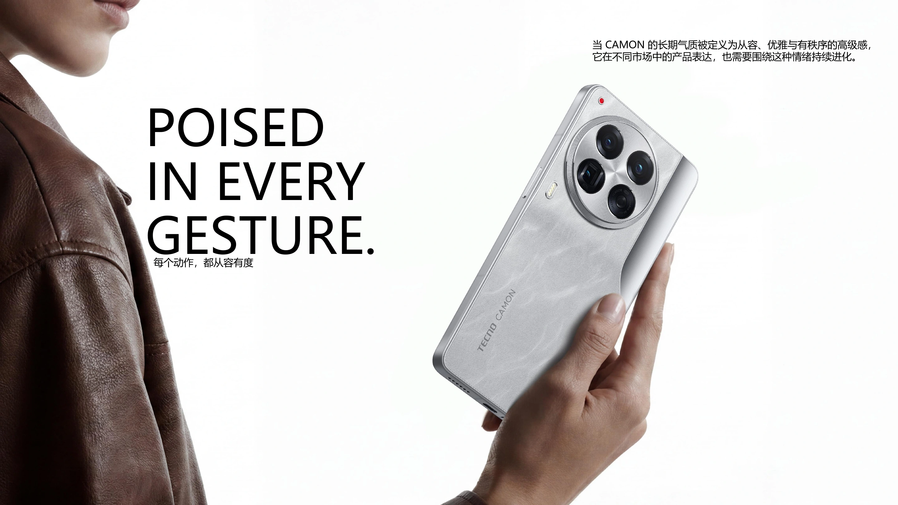
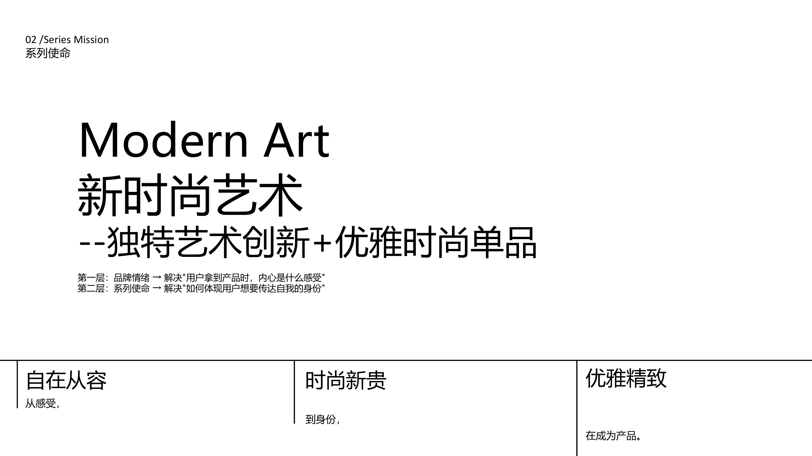
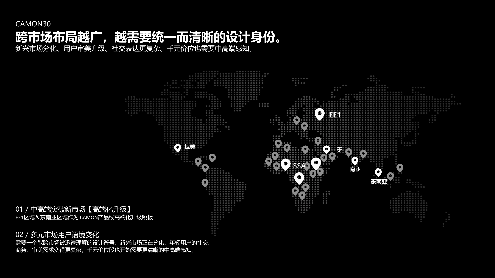
核心调性升级
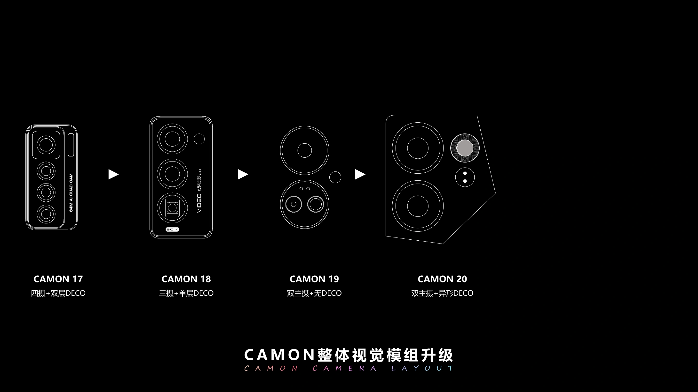
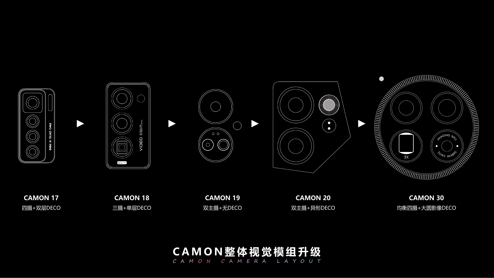
以经典旁轴相机为原型
建立 CAMON 30 的影像设计语言
保留之前已经做好的滚动视频爆发点，承接前面的策略铺垫。
设计转化
经典旁轴相机顶部轮廓 → 提炼横向曲线与取景结构 → 转译为 CAMON 30 背部影像曲线


变焦拨盘刻纹 → 提炼精密滚花肌理 → 转译为金属摄像头 Deco
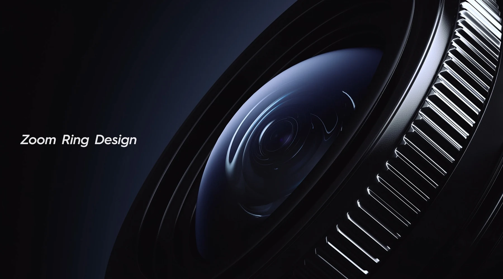
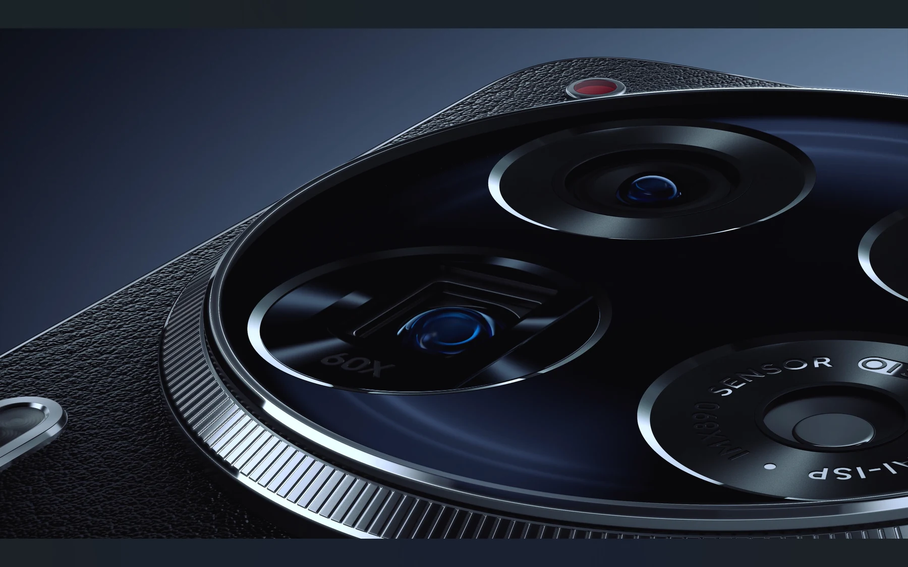
独创 RGB 视频录制灯 → 提炼拍摄提示与交互信号 → 转译为智能呼吸红色标识
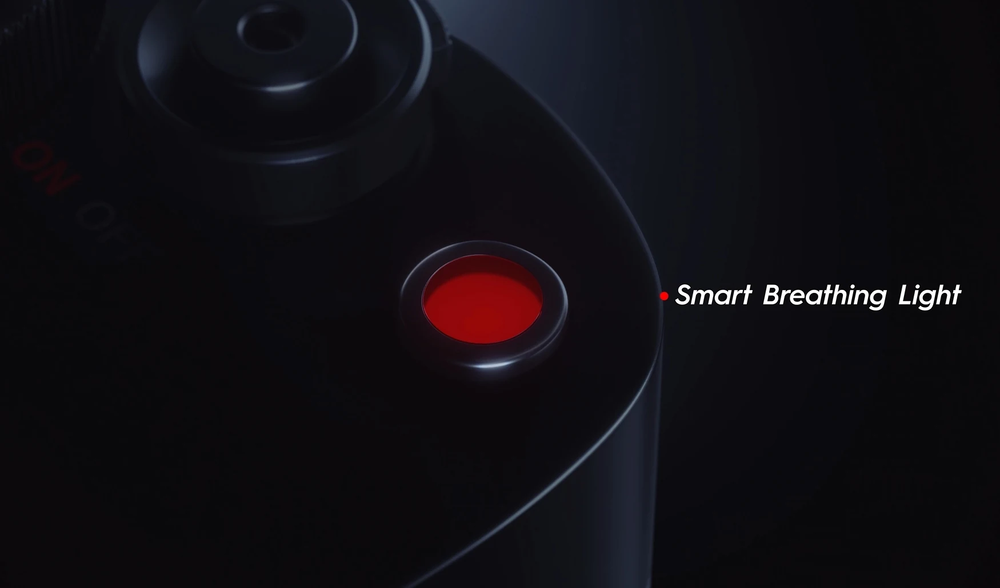
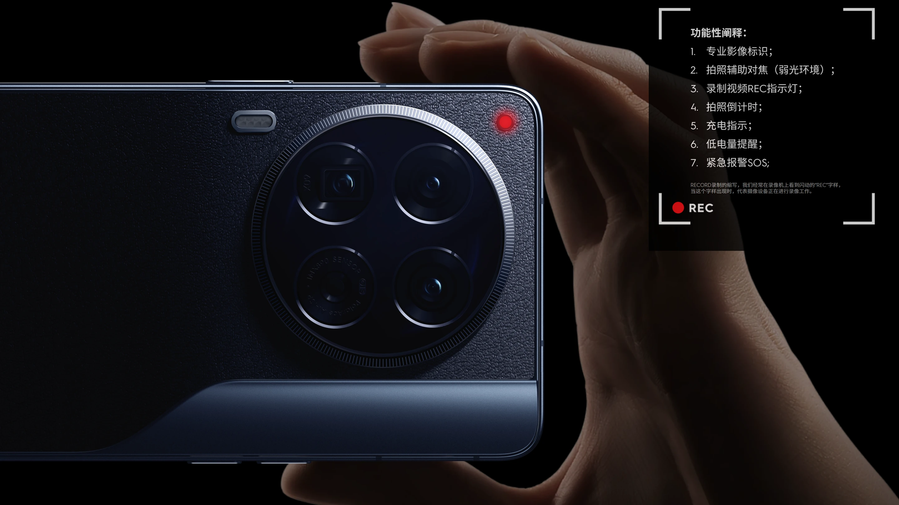
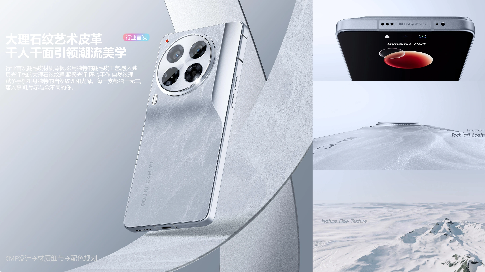